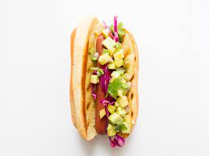

Weenie Hut Dogs Recipe

Description:
Not tough enough to get into the Salty Spittoon? Don't worry: Weenie
Hut Jr. would be more than happy to host your party, featuring these
pineapple-topped hot dog sliders! These are the slickest glizzies
around.
Ingredients:
- 3 tablespoons lime juice
- 2 tablespoons honey
- 1/4 teaspoon salt
- 1 cup cubed fresh pineapple (1/2 inch)
- 1 cup cubed peeled mango (1/2 inch)
- 1/4 cup finely chopped red onion
- 2 tablespoons finely chopped sweet red pepper
- 12 hot dogs
- 12 hot dog buns, split
Steps:
- In a small bowl, whisk lime juice, honey and salt until blended.
Add pineapple, mango, onion and pepper; toss to coat.
- Grill hot dogs, covered, over medium heat or broil 4 in. from
heat until heated through, 7-9 minutes, turning occasionally.
- Place hot dogs in buns; cut each crosswise in half. Serve with
fruit salsa.